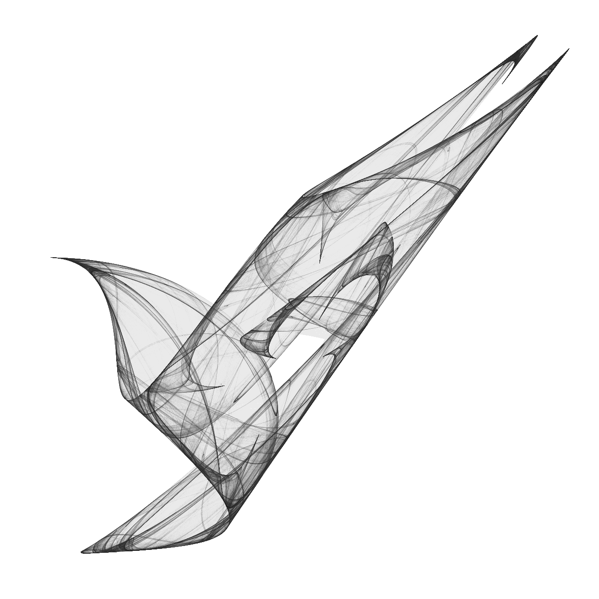
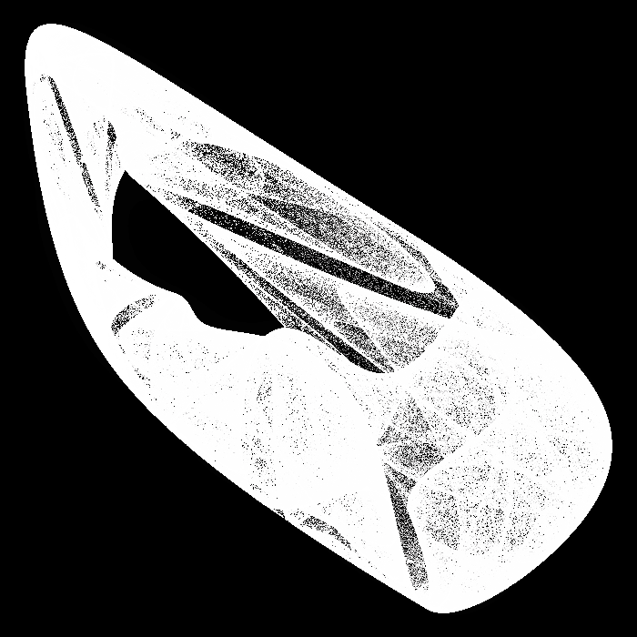
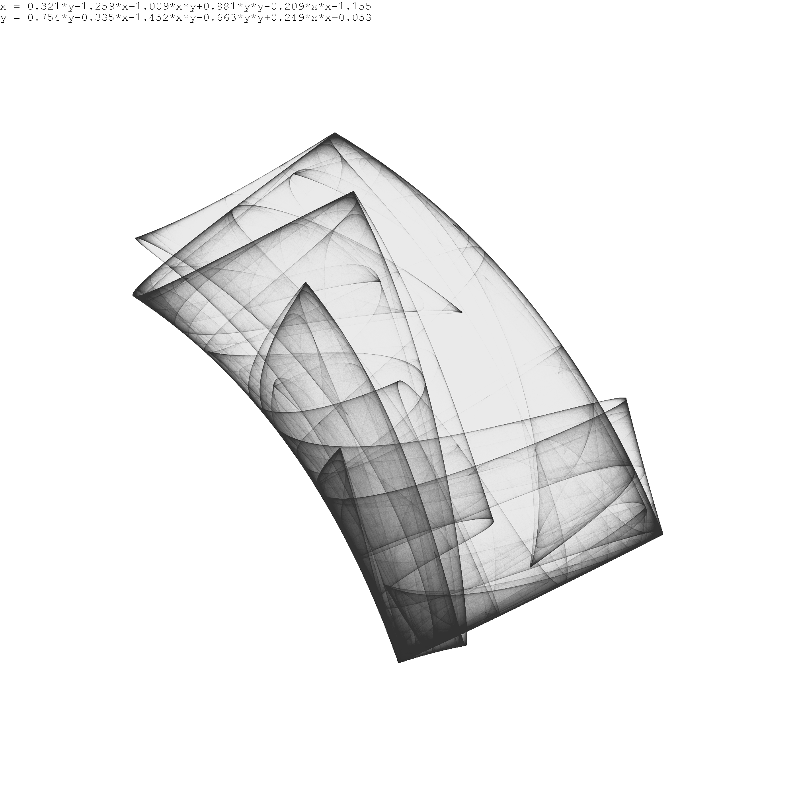
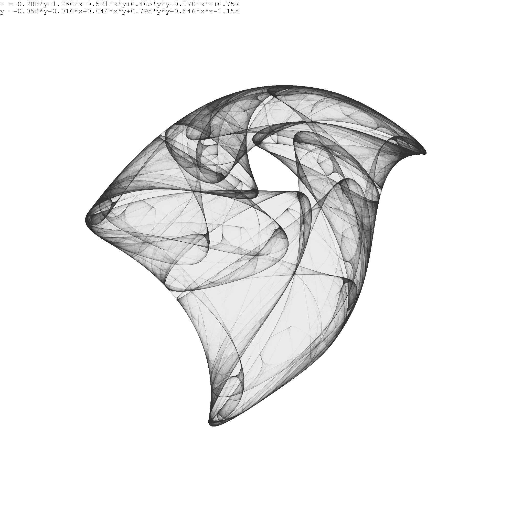
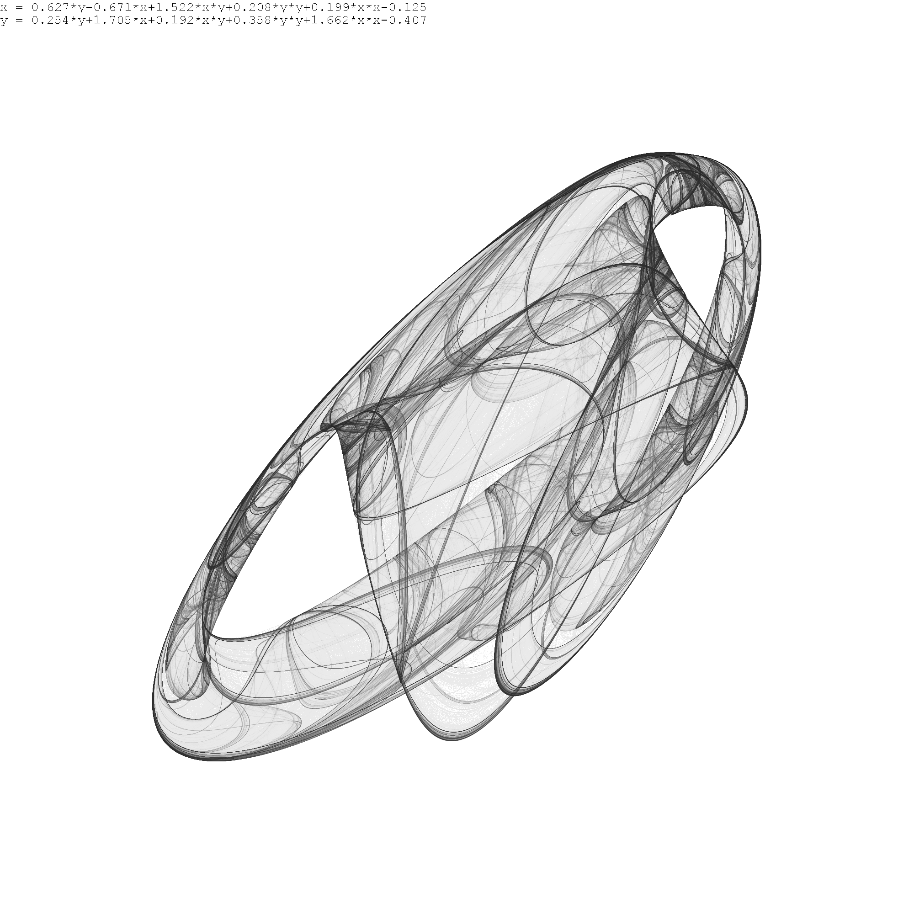
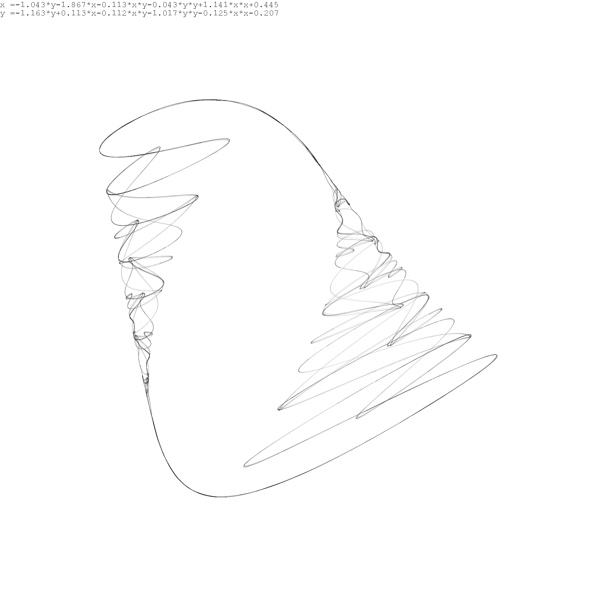
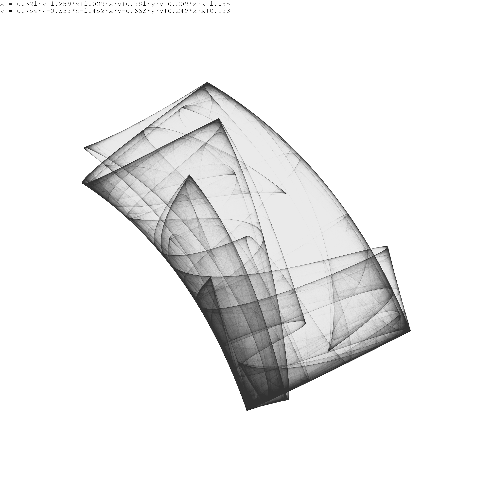
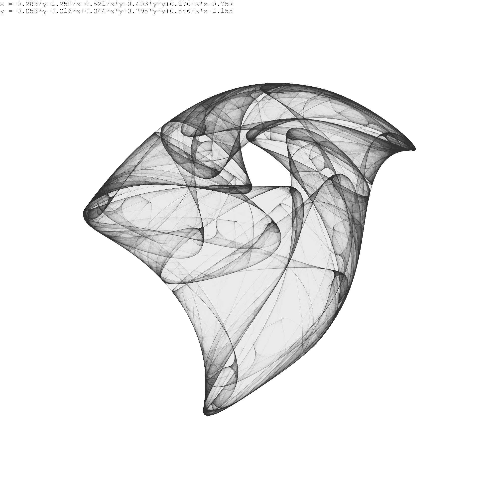
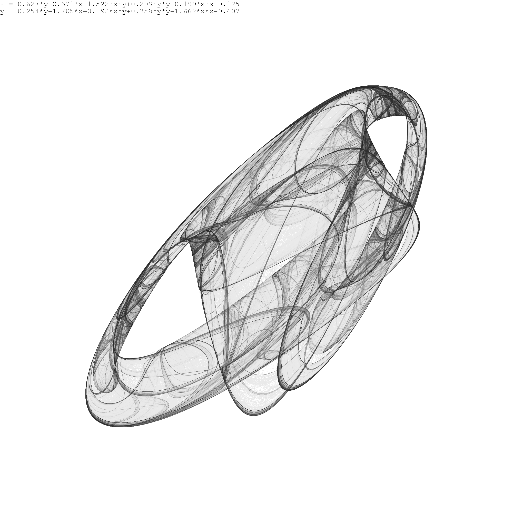
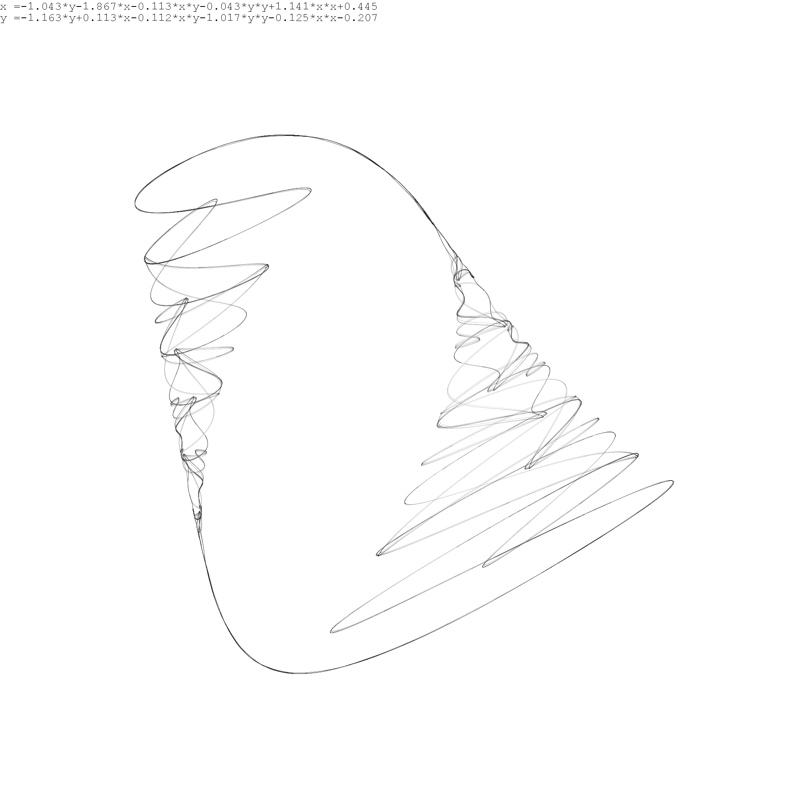

Math Section! Skip to the bottom for pretty pictures.
For this project, I was messing with functions of the form \[f(x,y) = c_1 + c_2 x + c_3 y + c_4 x^2 + c_5 xy + c_6 y^2\] These are known as bivariate polynomials(of the second degree), and have a total of six coefficients. When taking any two bivariate polynomials \(f_1,f_2\), you can create a function \(f:= \left(f_1,f_2\right)\) from \(\mathbb{R}^2\to\mathbb{R}^2\) by \[f(x,y)= \left(f_1(x,y),f_2(x,y)\right)\] Now that the range matches the domain, we can repeatedly apply \(f\). Iteration of this function \(f\) can yield interesting results! Consider any starting point \(\left(x_0,y_0\right)\) you want, the sequence \[\,\left( \,(x_0,y_0),f(x_0,y_0),f^2(x_0,y_0),f^3 (x_0,y_0),\dots \,\right)\] Note that \(f\) has 12 coefficients, 6 from \(f_1\) and 6 from \(f_2\). An alternative way to think of this sequence is by starting with your favorite point \(\left(x_0,y_0\right)\), then calculating the next point like so: \[ x_{n+1} = c_1 + c_2 x_n + c_3 y_n + c_4 x_n^2 + c_5 x_ny_n + c_6 y_n^2\] \[ y_{n+1} = c_7 + c_8 x_n + c_9 y_n + c_10 x_n^2 + c_{11} x_ny_n + c_{12} y_n^2\] Depending on what you choose the 12 coefficients to be, the sequence can shoot off to infinity, shrink down to a single point, or display more interesting behavior. For example, the function \(f(x,y) = (x^2+1,y^2+1)\) starting at \((0,0)\) will generate the sequence \[\left(\,\,(0,0),(1,1),(2,2),(5,5),(26,26),(677,677),...\right)\] which diverges to infinity quite fast. On the other hand, iteratively applying the function \(f(x,y) = \left(\frac{1}{2}x,\frac{1}{2}y\right)\) will generate a sequence that converges to \((0,0)\) regardless of starting point.

Programming Section!
The above function description has 12 coefficients,
meaning finding interesting or cool coefficients was equivalent to navigating a 12-dimensional space.
This is a massive search space, and extremely minor changes in coefficients cause significant changes in the iterated sequence.
I wrote a python script that would create 12 random coefficients, then analyze the sequence for "interestingness".
Firstly, if it shot off to infinity or converged to zero, then it is not interesting. Turns out more than 99.9% of these functions are not interesting! Of this remaining 0.1% of coefficients,
many other things can go wrong to destroy the aesthetics of the sequence. These pictures are literally one in a million! When I initially starting plotting these sequences, I didn't have a very sophisticated way to show them(see right)
By doing hundreds of millions of iterations on a single function, then turning this massive sequence into a 2D histogram, I was able to color them better. Here is the gallery of my favorites - there are more in the github folder as well.
 






